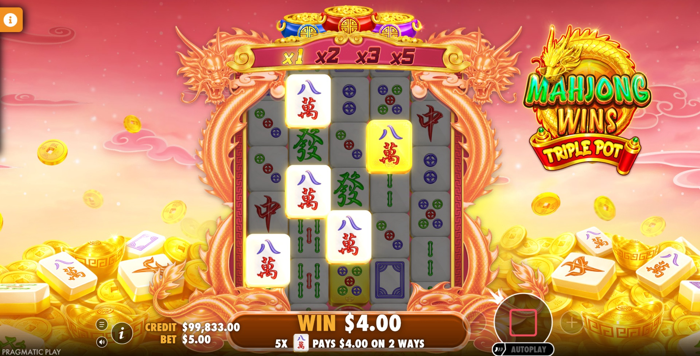
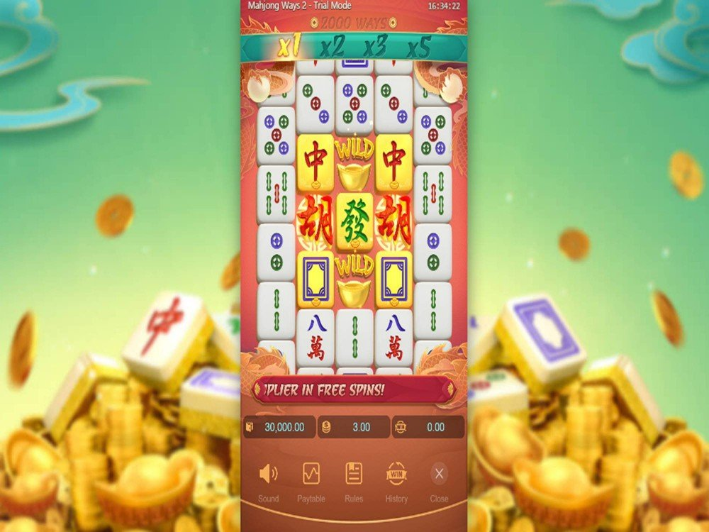

The Top Online Casinos in Malaysia 2026
I’ve lost count of how many mahjong-themed slots have crossed my screen in the last couple of years. Most of them borrow the tiles, slap on some jade-and-gold colour grading, and call it a day. So I went into Mahjong Ways 2 expecting more of the same reskinned filler. What I got instead was a game I kept reloading long after I’d finished taking notes for this review — and that alone tells you something.
This is PG Soft’s sequel to the slot that arguably kicked off the whole Asian-tile craze, and it landed all the way back on 1 July 2020. Six years is ancient history in slot terms, yet it’s still one of the most-searched titles in the PG Soft catalogue. I wanted to find out whether that’s nostalgia, marketing muscle, or the game genuinely holding up. Short version: it’s mostly the third one.

First thirty seconds: mildly confusing, then it clicks
Here’s the thing nobody warns you about. Load the game up and it defaults to a $12 spin, which for a lot of people is a mild heart attack before they’ve even pressed a button. Don’t panic — the betting system just looks scarier than it is.
PG Soft uses a two-level bet structure here: a Bet Size (0.03, 0.10, 0.30, or 0.90) and a Bet Level (1 through 10). The two multiply together against a 20-credit base, and that’s what produces your actual stake. It’s fiddlier than the single up-down arrow most slots give you, and honestly it’s the one piece of the design that feels dated. Once you’ve set it, though, you never think about it again. The full range runs from about $0.60 up to $180 a spin, so it scales from cautious to reckless depending on your mood.
Everything else is instantly readable. Match three or more identical tiles on adjacent reels starting from the left, winning symbols vanish, new ones tumble down to fill the gaps, and the chain keeps going as long as you keep connecting. Standard cascade stuff, executed cleanly.
The multiplier ladder is the whole game, really
What keeps me spinning is the multiplier that lives above the reels. In the base game it steps up 1× → 2× → 3× → 5×, climbing one notch with every successful cascade and resetting the moment a chain dies. It’s a small mechanic but it does something clever to your brain: every tumble that connects feels like it matters, because you can watch the number tick upward in real time.
Then there are the gold-plated tiles. On any given spin, symbols on the middle three reels (reels 2, 3, and 4) can show up gilded. If a gold tile lands in a winning combo, it leaves a wild behind after it tumbles away. When you get a couple of those chaining into each other, the board can genuinely snowball in a way that feels a bit magic even when you know exactly how it works.

Free spins: worth the wait, not worth buying (you can’t anyway)
Land three scatters anywhere and you’re into the bonus — 10 free spins to start, plus two more for every extra scatter that drops during the round. This is where Mahjong Ways 2 earns its reputation.
Two things change in the bonus and both are meaningful. The multiplier ladder doubles across the board (2× → 4× → 6× → 10× instead of the base 1-to-5), and every non-wild, non-scatter symbol on reel 3 turns gold automatically. Put those together and you’ve got a middle reel constantly manufacturing wilds while your multiplier climbs faster than it ever does in the base game. My best session of testing came entirely out of one free-spins run where the cascades just refused to stop.
One note for the bonus-buy crowd: there’s no Buy Feature button here. You wait for the scatters the old-fashioned way. Given how much of the game’s payout potential is locked inside free spins, I understand why some players find that frustrating, but I actually don’t mind it — it keeps the base game tense instead of turning it into a countdown to the “real” game.
Let’s talk numbers — and the mess around them
RTP is the easy part: 96.95%, which is comfortably above the 96% industry midpoint and genuinely one of the better returns you’ll find on a game this well-known. PG Soft does run multi-RTP configurations, meaning some casinos serve up a lower version, so it’s always worth a glance at the in-game rules panel before you commit real money.
Now the messy part. If you go hunting across review sites for the max win, you’ll get whiplash. I’ve seen it quoted as 1,708×, as 25,000×, and as a headline-grabbing 100,000×, sometimes on pages describing the exact same game. That’s not a small discrepancy. My honest read, after playing it a lot: this does not behave like a 100,000× monster in practice. It’s a game built on steady tumble chains and reasonable multiplier stacking, not sudden six-figure explosions. Treat the giant numbers as theoretical ceilings you will almost certainly never see, and you’ll set your expectations correctly.
Volatility gets the same treatment — “medium” on some sites, “medium-high” or “high” on others. In my hands it played medium, or medium-leaning-high at worst. The published hit rate is roughly 29.9%, so you’re connecting a win on nearly three of every ten spins. That matches the feel exactly: you’re rarely bone-dry for long, but the meaningful money still lives in the bonus. Budget for a couple of hundred spins to give free spins a fair chance to show up.
What it gets right, and where it shows its age
The presentation is clean without being sterile. Tiles are crisp and easy to parse at a glance, which matters more than flashy animation when you’re watching fast cascades. It’s HTML5 so it runs identically on my phone and desktop, no app, no stutter. The pacing sits in a nice pocket where sessions stretch out rather than evaporating.
The knocks are minor. That two-level bet system is unnecessarily clunky in 2026. There’s no bonus buy. And if you’re coming from the current wave of maximalist, feature-stuffed slots, Mahjong Ways 2 might feel almost restrained — there’s one bonus, and it doesn’t reinvent itself with ten sub-modes. But I’d argue the restraint is a feature, not a bug. It knew what it was doing back in 2020 and it hasn’t needed a rewrite since.
So, should you play it?
If you like cascading reels, a multiplier you can actually watch build, and a bonus round that pays off patience — yes, easily. It’s the rare sequel that improved on the original without throwing away what worked, and the high RTP means your bankroll gets a fairer shake than most games of this vintage offer. If you’re chasing brutal high-variance swings or you can’t stand waiting for a natural bonus trigger, you’ll probably bounce off it.
Me? I came to review it and ended up just… playing it. Six years on, that’s about the highest compliment I can give a slot. Give the free demo a spin before you put money down — the two-level bet quirk aside, you’ll know within a few minutes whether it’s your kind of game.
Play responsibly. Slots are entertainment, not income — set a budget you’re comfortable losing and stick to it, in demo or real-money mode.